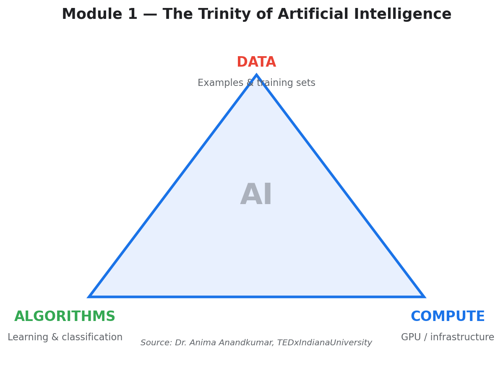

| Assignment Type | Lab — Video Review |
|---|---|
| Topic | TEDx talk “Trinity of Artificial Intelligence” by Dr. Anima Anandkumar at Indiana University |
| Source | YouTube — TEDxIndianaUniversity |
Dr. Anima Anandkumar’s TEDx talk at Indiana University presents a compelling framework for understanding the explosive growth of artificial intelligence. In her presentation, Dr. Anandkumar identifies three core ingredients — or a “trinity” — that define AI: Data, Algorithms, and Compute. These three pillars work in concert to drive every meaningful advance in the field, and no single pillar can produce breakthroughs without the others.
A key point in her talk is the transformative role of GPU computing. Dr. Anandkumar explains how the massive parallelism of graphics processing units has been repurposed for the matrix and tensor operations that underpin machine learning. She highlights a landmark achievement: by 2015, AI systems had surpassed the human error rate in image categorization tasks, a milestone that demonstrated the practical power of deep learning at scale.
Dr. Anandkumar also introduces the concept of tensors — mathematical objects that generalize vectors and matrices into higher dimensions. Tensors allow researchers to represent and analyze complex, large-scale datasets more efficiently than traditional methods. She connects this theoretical concept to a real-world application through her work on Amazon Comprehend, a natural language processing program that uses tensor methods to detect which combinations of words frequently appear together by topic, enabling machines to better understand and categorize large collections of text.

| Pillar | Description | Example |
|---|---|---|
| Data | The examples and training sets that AI systems learn from | Image datasets, text corpora, sensor readings |
| Algorithms | The learning processes that classify and make sense of data | Neural networks, decision trees, tensor methods |
| Compute | The GPU infrastructure that processes data at scale | NVIDIA GPUs, cloud computing clusters |
This lab gave me a foundational framework for thinking about AI that I carried throughout the entire semester. Before watching this talk, I thought of AI primarily in terms of algorithms and models. Dr. Anandkumar’s trinity framework made me realize that data and compute are equally essential — a brilliant algorithm running on insufficient compute, or trained on poor data, will still fail.
The milestone of AI surpassing human image categorization accuracy by 2015 was particularly striking. It showed that the convergence of these three pillars can produce results that exceed human capabilities in specific tasks, even if AI is not broadly more “intelligent” than humans. Understanding tensors as a mathematical tool that bridges theory and real-world NLP applications was also a valuable insight that resurfaced in later modules on GPT-3 and T5.
Anandkumar, Anima. “Trinity of Artificial Intelligence.” TEDxIndianaUniversity, YouTube, https://www.youtube.com/watch?v=NKpuX_yzdYs.